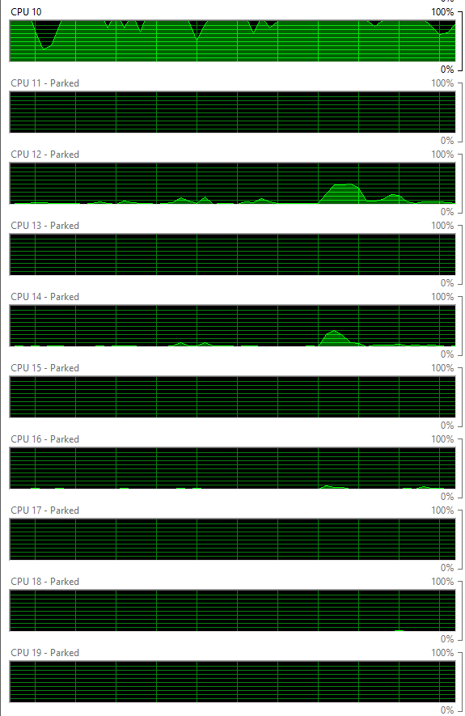
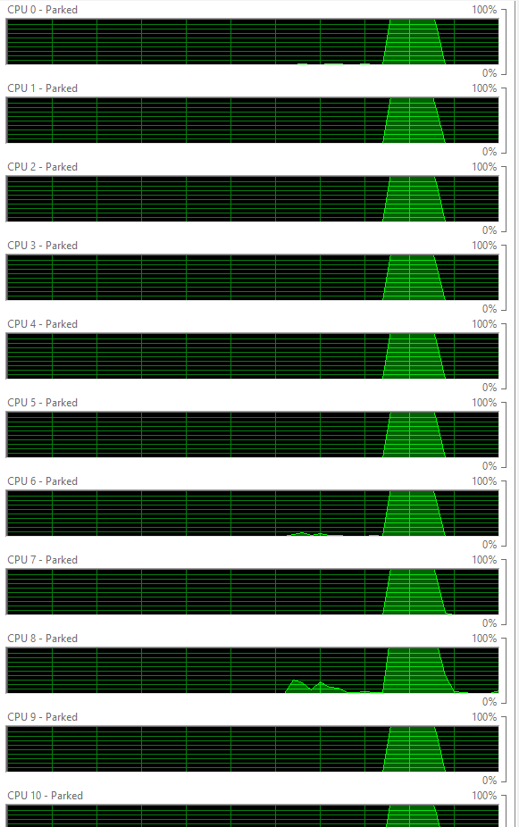
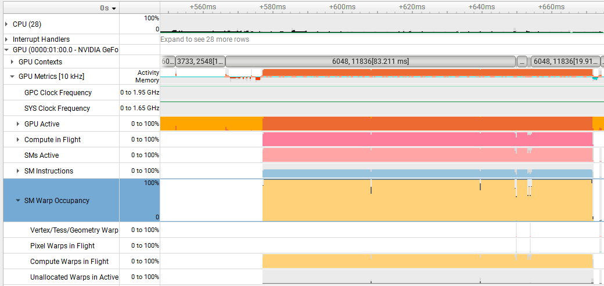
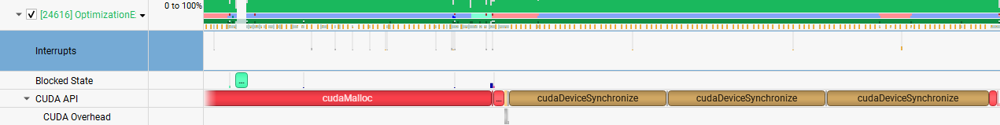

Introduction
NVIDIA has a whole suite of tools that can be used for debugging, profiling, and optimizing. These notes will specifically focus on how to use Nsight Systems for a simple C++ application. Nsight Systems shows you how the CPU and GPU spend their time relative to each other, memory transfer times between host and device, PCIe throughput, and much more. The C++ application is a simple box blur filter on a 4160 by 4160 pixel image that will progressively get faster as we optimize. These notes don't explain all possible ways to optimize an application, but introduce tools to help with profiling and highlight questions that can be asked to help optimize an application.
Nsight Systems
Nsight Systems allows for profiling of an application on the local host, through USB connection, or even through SSH connection. After a target is set for profiling, Nsight Systems will ask for admin privileges to access CPU and GPU counters. Once setup is complete, find the target application to run and also include the necessary arguments. For the example used in this post, it is just a simple .exe and the folder that holds the images for processing. Nsight Systems offers a lot of different traces to collect data from and below is a short description about the traces we are interested in:
- CUDA Trace: Captures CUDA API function calls, memory copies between host and device, and kernel information such as execution time and duration
- GPU Context Switch Trace: Helps determine the specific process that is using the GPU.
- GPU Metrics: Collects data on GPU state, SM states, SM warp occupancy, PCI data, and more.
- NVTX Trace: Used by developers to add custom markers in code which can mark sections of code or functions.
With the target application set and traces selected, we can start profiling manually, within a time range, within frames, or with a hotkey to start and stop. What is most important to remember is that the system will log activities that occur in nanoseconds which means a lot of data can be captured even within 30 seconds. When profiling, try to be precise about what data is being captured to limit the amount of unnecessary or unrelated data.
Multipass Box Blur Filter
This filter works by going through and changing the value of each pixel to the average value of that pixel's neighbors. How many neighbors are considered in the average is determined by an amount (radius) that is set. The blur intensity is determined by how many blur operations are done on the image. It is important to note that a Gaussian blur can be used instead and yields smoother results, but a box blur filter was used for the following reasons:
- Simplicity: It is an easy algorithm to understand and doesn't detract from the main focus.
- Profiling: Much cleaner to profile since reapplying the filter is a constant workload.
- Quality: After 3 applications of the box blur, it is visually similar to Gaussian blur.
CPU Single Threaded Approach
In a single threaded solution, the system must go through each pixel of input and find the average pixel value of its neighbors. Once all the values within the radius are averaged, the output at that pixel is modified. This operation will be repeated depending on how many passes were given to the function. See code below.
static void cpuSingleThreadBlur(const unsigned char* input,
unsigned char* output, const int width, const int height,
const int radius, int passes = 3)
{
const int totalPixels = (radius * 2 + 1) * (radius * 2 + 1);
const size_t imageSize = (size_t)width * height;
std::vector<unsigned char> bufferA(input, input + imageSize);
std::vector<unsigned char> bufferB(imageSize);
//If a pixel were to be blurred then that blurred pixel
//would be counted as a neighbor for future pixels.
//We want only to count the original neighbors.
unsigned char* src = bufferA.data();
unsigned char* dst = bufferB.data();
for (int pass = 1; pass <= passes; pass++)
{
for (int row = 0; row < height; row++)
{
for (int col = 0; col < width; col++)
{
int sum = 0;
for (int i = -radius; i <= radius; i++)
{
for (int j = -radius; j <= radius; j++)
{
int neighborRow = std::clamp(row + i, 0, height - 1);
int neighborCol = std::clamp(col + j, 0, width - 1);
sum += src[neighborRow * width + neighborCol];
}
}
dst[row * width + col] = sum / totalPixels;
}
}
std::swap(src, dst);
}
std::copy(src, src + imageSize, output);
}
The time complexity of this function is O(P · H · W · R2) and for a 4160 pixel by 4160 pixel image with 3 passes and a radius of 5 we have 6.2 billion operations which took over 298.54 seconds to complete. Since we are looking to optimize this, let's first just look at the performance to see how our threads are behaving. Ask yourself, are there cores maxing out and are there other cores not doing any work that could help reduce the time? While we could use Nsight Systems to profile and answer our questions, it would be overkill due to the volume of data collected in the 298 seconds. It is easier to actually look at resource monitor and see CPU core performance. The image below shows what the workload looked like in my CPU cores.

From the image, it is clear that there are cores available to perform compute for our blur filter.
CPU Multithreaded Approach
The blurring of one pixel does not depend on the values of other blurred pixels. This means that we can calculate all the pixel blurs independently. Before jumping straight to the GPU, let's take advantage of the threads on the CPU and see what kind of improvement we can get. Fortunately the OpenMP API lets us use our threads to compute the pixels. The code below transforms the single threaded approach to a multithreaded one where we use 2 buffers to allow the blur to be correctly applied.
static void cpuMultiThreadBlur(const unsigned char* pixels,
unsigned char* output, const int width, const int height,
const int radius, const int passes = 3)
{
const int totalPixels = (radius * 2 + 1) * (radius * 2 + 1);
const size_t imageSize = (size_t)width * height;
std::vector<unsigned char> bufferA(pixels, pixels + imageSize);
std::vector<unsigned char> bufferB(imageSize);
unsigned char* src = bufferA.data();
unsigned char* dst = bufferB.data();
for (int pass = 1; pass <= passes; pass++)
{
#pragma omp parallel for schedule(static)
for (int row = 0; row < height; row++)
{
for (int col = 0; col < width; col++)
{
int sum = 0;
for (int i = -radius; i <= radius; i++)
{
for (int j = -radius; j <= radius; j++)
{
int neighborRow = std::clamp(row + i, 0, height - 1);
int neighborCol = std::clamp(col + j, 0, width - 1);
sum += src[neighborRow * width + neighborCol];
}
}
dst[row * width + col] = sum / totalPixels;
}
}
std::swap(src, dst);
}
std::copy(src, src + imageSize, output);
}
In this code snippet, a group of threads will be launched each time we hit the pragma. Each thread is given a section of the pixels to calculate the blur for and the number of threads launched is based on available cores. For my system, I had all 28 cores available and I was able to compute the blur in 17.9 seconds, a 16x speed up compared to the single threaded solution! The image below confirms that the system is using all available cores.

The next question to ask is can we get even faster and what happens if we have way more threads available to us? If you own a GPU, we'll most definitely get faster and we have thousands of threads available for compute.
GPU Approach
Code that runs on the GPU is called a kernel.
It looks like a regular C++ function, but it's marked with __global__ and runs across many threads at once.
Each thread executes the same kernel code but operates on a different piece of the data.
Before the GPU can do anything, the image has to actually be on the GPU.
That means allocating device memory with cudaMalloc(), copying the input across PCIe with cudaMemcpy(), running the kernel, then copying the result back.
The GPU hardware groups threads together to run on its streaming multiprocessors (SM).
SMs are the processing units for a GPU and a GPU contains many of them.
Each SM has its own memory, registers, caches, and compute units that operate independently from the other SMs.
These SMs execute the same SASS instruction (similar to an assembly instruction) on a group of 32 threads at the same time.
This grouping of 32 threads is called a warp and every thread in a warp executes the same instruction at the same time.
When a warp is ready, one of the SM's warp schedulers picks it up and executes its next instruction.
Warps that are waiting on a memory read or other delay are skipped over; the scheduler picks a different ready warp instead, which is how the GPU keeps busy through memory latency.
To avoid having partially full warps, we want to make the blocks a multiple of 32.
For this example, we will make blocks of 16 x 16 threads meaning 256 threads to blur the pixels which means 8 warps per block are distributed to the SMs.
The grid is how many blocks are being launched in total and the number of blocks must cover the whole image.
We compute the grid dimensions with a ceiling divide so that if the image dimensions aren't exact multiples of 16, we still launch one extra block to cover the leftover pixels.
Without that, some pixels on the right and bottom edges wouldn't get a thread assigned to them.
For our 4160 × 4160 image with 16 × 16 blocks, that comes out to a grid of 260 × 260 = 67,600 blocks of 256 threads each.
This means we will launch about 17.3 million threads to compute every pixel.
We apply all this GPU knowledge to the launchGpuBlur() and blurKernel() functions, which are shown below.
__global__ void blurKernel(const unsigned char* input,
unsigned char* output, const int width,
const int height, const int radius)
{
//Every block has threads and we need to take into account those blocks
int col = blockIdx.x * blockDim.x + threadIdx.x;
int row = blockIdx.y * blockDim.y + threadIdx.y;
if(col >= width || row >= height)
{
return;
}
const int totalPixels = (radius * 2 + 1) * (radius * 2 + 1);
int sum = 0;
for(int i = -radius; i <= radius; i++)
{
for(int j = -radius; j <= radius; j++)
{
int neighborRow = max(0, min(row + i, height - 1));
int neighborCol = max(0, min(col + j, width - 1));
sum += input[neighborRow * width + neighborCol];
}
}
output[row * width + col] = sum / totalPixels;
}
void launchGpuBlur(const unsigned char* h_input,
unsigned char* h_output, const int width,
const int height, const int radius, const int passes)
{
const size_t imageSize = (size_t)width * height;
unsigned char* d_input = nullptr;
unsigned char* d_output = nullptr;
cudaMalloc(&d_input, imageSize);
cudaMalloc(&d_output, imageSize);
//block is collection of thread
//a grid is collection of blocks
//We need to size the blocks to account for each pixel since each pixel gets a thread.
//dim3 item(x, y, z);
dim3 blocks(16,16); //good default but could be any multiple of 32
dim3 grid( (width+16-1)/16 , (height+16-1)/16 );
cudaMemcpy(d_input, h_input, imageSize, cudaMemcpyHostToDevice);
for(int i = 1; i <= passes; i++)
{
blurKernel<<<grid, blocks>>> (d_input, d_output, width, height, radius);
cudaDeviceSynchronize();
std::swap(d_input, d_output);
}
cudaMemcpy(h_output, d_input, imageSize, cudaMemcpyDeviceToHost);
cudaFree(d_input);
cudaFree(d_output);
}
Running this on the same 4160×4160 image with the same number of passes, gives us a completion time of 255 ms. A speed up of over 1100x compared to the single threaded version is great, but let's be even more impatient and squeeze even more performance out of this. Note that both versions use the same function name, so if you copy-paste, update the earlier one.
GPU Synchronize Optimized with Nsight Systems
The speed of this program can no longer be analyzed by resource manager or task manager, but now Nsight Systems is the perfect tool. Let's profile the program and see what we get.


From the images, we see that our warp occupancy is great, but when looking at our CUDA API calls there are some questions we can ask.
It makes sense that we are calling cudaDeviceSynchronize() 3 times since for every pass we call the function 1 time, but let's ask do we really need to?
The cudaDeviceSynchronize() is great for making the CPU side wait until the GPU is done with its work.
At first glance this makes sense, we compute the output and then do a swap.
How could we possibly swap before we are even done doing the work?
Well, there are two things that are happening here.
First, our kernel doesn't specify a stream so all items are going into a default stream's queue in order.
Since the queue will process the work in order, it is impossible for the most recently launched kernel to finish before another kernel.
Second, the values of input and output are captured at the moment it is queued so the GPU will still operate on the addresses it was handed rather than the current values.
This means that the cudaDeviceSynchronize() doesn't actually do anything for us and forces the CPU to wait unnecessarily.
Let's remove the cudaDeviceSynchronize() and see if there are any performance increases.
With the exact same code, but cudaDeviceSynchronize() removed, the Nsight System CUDA API timeline doesn't have any more syncs and is dominated by cudaMalloc() and cudaMemcpy().
Right now it seems like cudaMemcpy() is taking forever to complete, but cudaMemcpy() is a blocking call and will force the CPU to actually wait until it is done.
The new process is able to complete in 227 ms.
There are other changes that can be made to utilize the GPU architecture more.
For example, we could use pinned memory for the host input and host output vectors to reduce the time it takes to transfer between host and device.
We could also use cudaMemcpyAsync() to let memory transfers overlap with GPU kernel work and CPU work which would be visible in Nsight Systems.
These performance increases would be great, but let's also optimize the kernel itself.
Is there a way for us to optimize the actual algorithm?
GPU Performance Kernel Optimized
Every thread is executing the kernel and the kernel is traveling through the radius amount of pixels to get a blur for the current pixel it is at. The actual total operations performed when calculating the blur is (R · 2 + 1)2. What if instead of going through both the rows and columns in the same kernel, we just go through rows and then columns?
__global__ void blurKernelHorizontal(const unsigned char* input,
unsigned char* output, const int width,
const int height, const int radius)
{
int col = blockIdx.x * blockDim.x + threadIdx.x;
int row = blockIdx.y * blockDim.y + threadIdx.y;
if(col >= width || row >= height) return;
const int n = radius * 2 + 1;
int sum = 0;
for(int j = -radius; j <= radius; j++) {
int c = max(0, min(col + j, width - 1));
sum += input[row * width + c];
}
output[row * width + col] = sum / n;
}
__global__ void blurKernelVertical(const unsigned char* input,
unsigned char* output, const int width,
const int height, const int radius)
{
int col = blockIdx.x * blockDim.x + threadIdx.x;
int row = blockIdx.y * blockDim.y + threadIdx.y;
if(col >= width || row >= height) return;
const int n = radius * 2 + 1;
int sum = 0;
for(int i = -radius; i <= radius; i++) {
int r = max(0, min(row + i, height - 1));
sum += input[r * width + col];
}
output[row * width + col] = sum / n;
}
void launchGpuBlur(const unsigned char* h_input,
unsigned char* h_output, const int width,
const int height, const int radius, const int passes)
{
const size_t imageSize = (size_t)width * height;
unsigned char* d_in = nullptr;
unsigned char* d_out = nullptr;
unsigned char* d_temp = nullptr;
cudaMalloc(&d_in, imageSize);
cudaMalloc(&d_out, imageSize);
cudaMalloc(&d_temp, imageSize);
dim3 blocks(16, 16);
dim3 grid((width + 16 - 1) / 16, (height + 16 - 1) / 16);
cudaMemcpy(d_in, h_input, imageSize, cudaMemcpyHostToDevice);
for(int i = 0; i < passes; i++)
{
blurKernelHorizontal<<<grid, blocks>>>(d_in, d_temp, width, height, radius);
blurKernelVertical <<<grid, blocks>>>(d_temp, d_out, width, height, radius);
std::swap(d_in, d_out);
}
cudaMemcpy(h_output, d_in, imageSize, cudaMemcpyDeviceToHost);
cudaFree(d_in);
cudaFree(d_out);
cudaFree(d_temp);
}
By taking the row and column calculation out into two separate kernels, the processing is now (R · 2 + 1) + (R · 2 + 1). With this optimization we complete the computation in 106 ms. There is a problem though since we are doing division twice in each pass. The division will cause truncation and won't make the blur 100% identical to the less optimized ones. We can fix that by using a wider integer buffer without dividing then dividing in the vertical pass.
Conclusion
There was a lot of GPU specific knowledge packed into this, but the bigger takeaway isn't any single optimization trick we did here. The real skill is learning to ask the right questions, using the right tool, and being as greedy as possible. We started with a single threaded filter that took almost 5 minutes to complete and finished with a version that can run in 106 ms. Profiling the problem with Nsight Systems really helped us determine if the hardware was being as useful as possible. Analyzing the kernel's algorithm itself also helped us push forward to a faster solution. The current work here only scratched the surface of what we can do (pinning memory, shared-memory tiling, asynchronous transfers), but these lessons and optimizations can be taken with us to our next problems to solve.